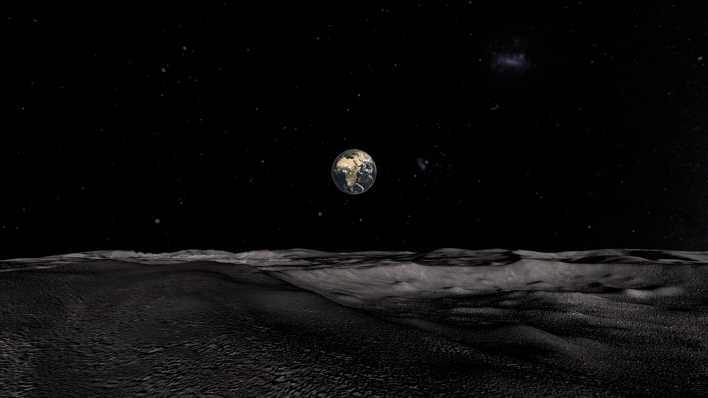
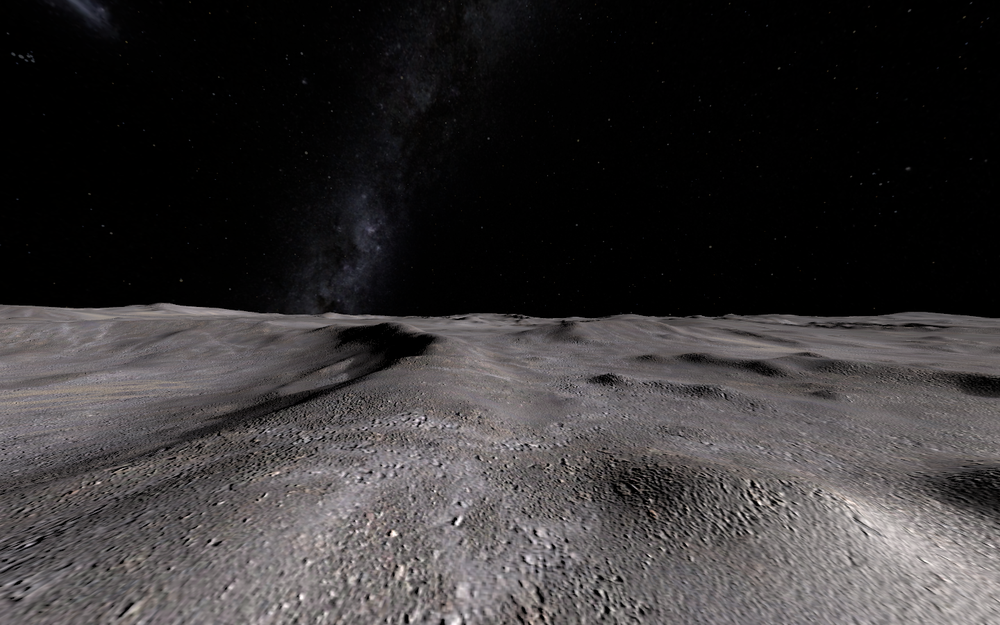
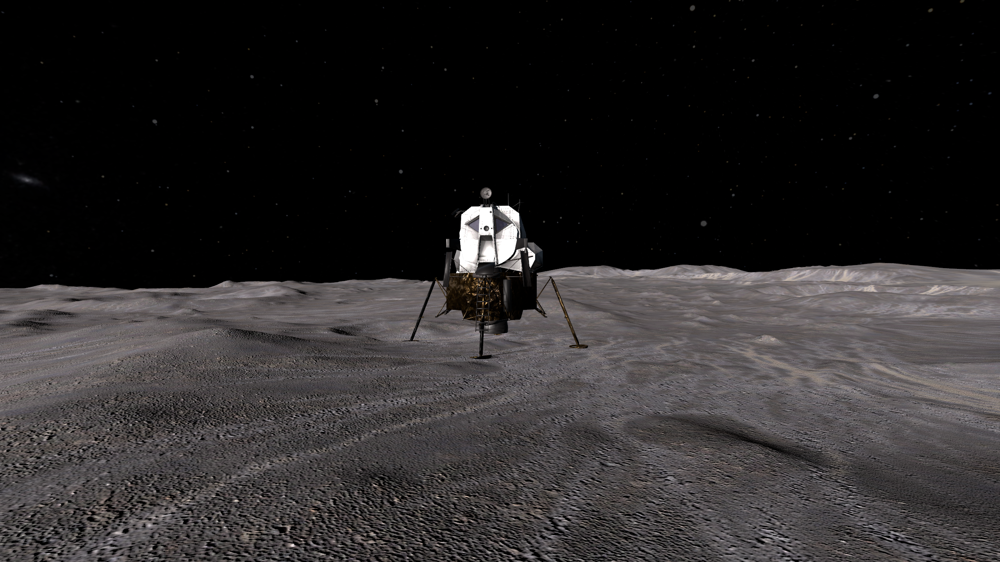

I have always loved the view of Earth from the Moon. It is a familiar image, but it is difficult to appreciate the scale of it on a flat screen: a small, colourful world hanging in a completely black sky above an enormous empty landscape.
Virtual reality seemed like the right way to experience it. I had just bought a Meta Quest 3 and wanted a 'project' to develop for it, so figured a Moon scene would be the way to go.
Earthrise puts you on the lunar surface. There is no score to chase and no carefully signposted route. The point is simply to stand there, look across the terrain, walk around the Lunar Module and watch the sky slowly change.
From a development point of view this is a great starting project. A slowly moving scene (so less chance of nausea whilst developing it!), it's cool, and shouldn't be too taxing for the hardware.

Making an empty landscape interesting
The Moon is mostly rock, dust and distance, so the landscape cannot rely on trees, buildings or weather to give it detail. It has to work through shape, light and scale.
The terrain uses a large height field with a detailed lunar surface texture. From ground level, the low ridges hide and reveal parts of the horizon as you move. The lack of an atmosphere means there is no fog to soften distant geometry, so draw distance, texture repetition and terrain detail all become much more obvious than they would in an ordinary outdoor scene.
I reduced the terrain complexity enough for the Quest to render it comfortably, while retaining the broad undulations that make the landscape feel much larger than the patch of ground actually being simulated.
You would not believe how long I have spent just walking around my living room/moon, staring at the rocks on the ground. Even my family got bored of laughing at me after a while...

A sky that behaves like part of the world
The background is not completely static. The star field and Milky Way rotate slowly, while the Sun, Earth and directional lighting move together.
Earth is kept at a fixed angular offset from the Sun. Both objects remain a constant distance from the player, which makes them behave like genuinely distant celestial objects rather than nearby models that noticeably grow and shrink as you walk around.
As the Sun falls towards the horizon, the main light fades smoothly. The landscape becomes properly dark instead of merely changing colour, which also gives the controller-mounted torch a reason to exist. Squeezing the index trigger gradually brings up the light rather than switching it abruptly on and off.
Earth has a separate cloud layer rotating at half the speed of the planet beneath it. It is a tiny detail at that distance, but it helps stop Earth feeling like a photograph pasted onto a sphere.
A Lunar Module for scale
The Lunar Module gives the scene a recognisable focal point and, more importantly, a sense of human scale. Against photographs it looks compact; standing beside it in VR makes the spindly legs, ladder and elevated cabin feel quite different.
It also makes navigation less abstract. The surrounding terrain is deliberately sparse, so the lander becomes home base: something you can walk away from, look back towards and use to judge how far you have travelled.
I tried to scale it accurately using NASA-approved dimensions. It's really something to 'walk' up to it and see it towering above you!

Of course the rocks are throwable
An entirely static lunar scene felt wrong once hand controllers were involved, so I scattered rocks across the terrain. Their positions, rotations and sizes are generated from a fixed random seed, giving the landscape a natural-looking distribution while remaining repeatable between runs.
Each rock begins frozen in place. Grabbing one enables its rigid-body physics, and releasing it lets it continue under gravity. This avoids finding that half the scenery has rolled away before the experience has even finished loading, while still allowing the important scientific activity of throwing moon rocks at things. OK - Not exactly realistic, but fun!
A place rather than a game
Earthrise never grew into a conventional game, and I do not think it needed to. It was an experiment in atmosphere: combining landscape, lighting, sound and physical scale to make a place that is pleasant to inhabit for a while.
The final result is quiet, slightly eerie and surprisingly effective. Looking back at Earth from a dark lunar surface remains one of those simple VR moments that works because you are not merely viewing the scene—you are standing inside it.
The source project is kept private because it contains third-party Unity assets that cannot be redistributed as raw files.